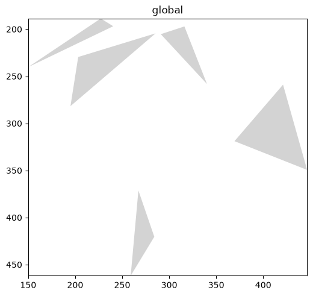
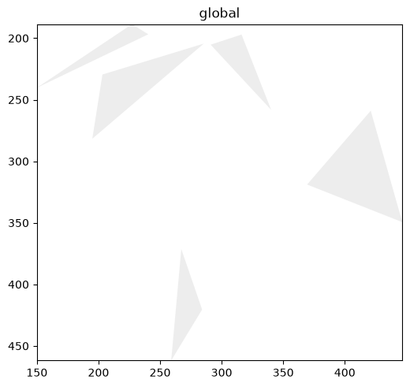
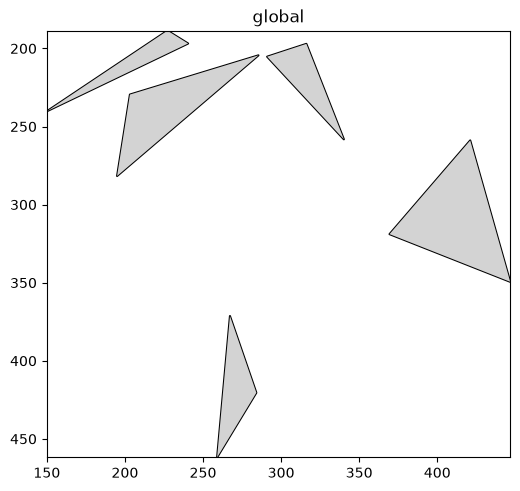
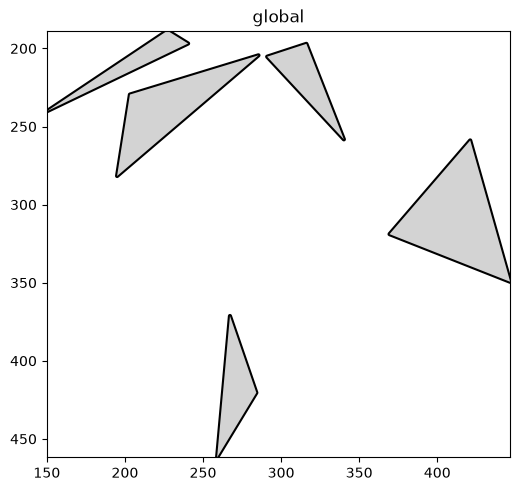
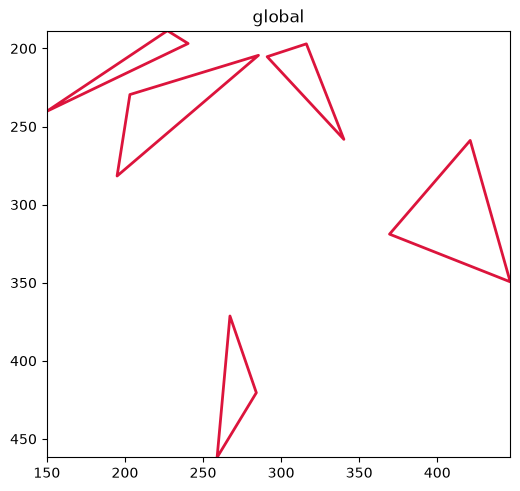
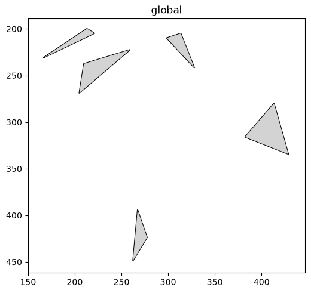
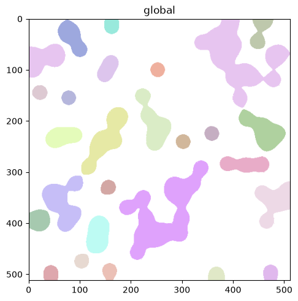
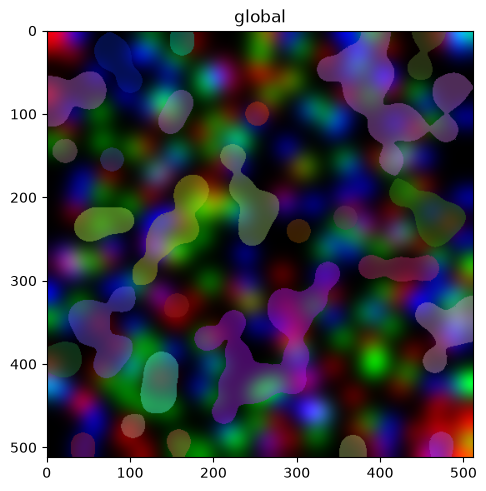
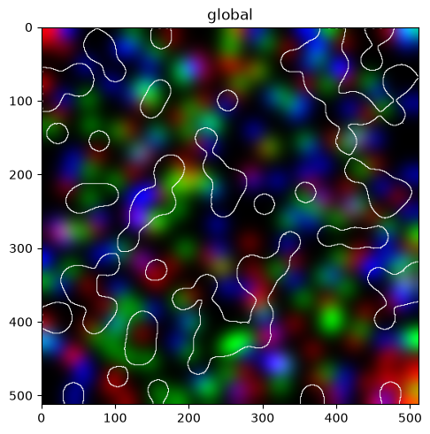
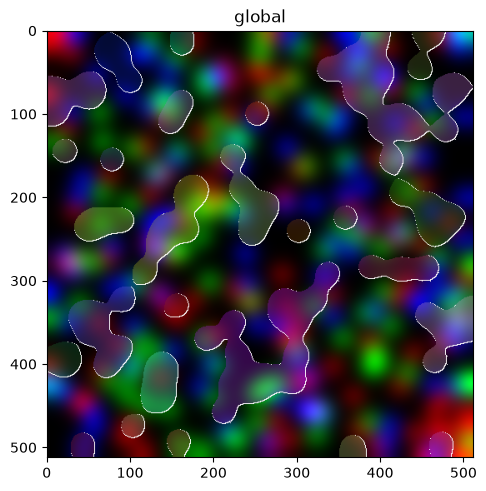

Styling shapes and labels in spatialdata-plot#
color= decides what colour a shape or label gets; a separate set of arguments decides how it is
drawn — how opaque the fill is, whether there is an outline, and how thick and what colour that outline
is. This tutorial walks through those styling knobs for render_shapes and render_labels. By the end
you should be able to:
Control fill opacity with
fill_alpha.Turn outlines on and style their width, colour, and opacity.
Draw hollow shapes (outline only) and translucent label masks over an image.
Trace segmentation boundaries with
outlineandcontour_pxon labels.
We use the synthetic blobs dataset throughout so the notebook stays small and reproducible.
Setup#
import spatialdata as sd
import spatialdata_plot # noqa: F401 # registers the .pl accessor
sdata = sd.datasets.blobs()
sdata
SpatialData object
├── Images
│ ├── 'blobs_image': DataArray[cyx] (3, 512, 512)
│ └── 'blobs_multiscale_image': DataTree[cyx] (3, 512, 512), (3, 256, 256), (3, 128, 128)
├── Labels
│ ├── 'blobs_labels': DataArray[yx] (512, 512)
│ └── 'blobs_multiscale_labels': DataTree[yx] (512, 512), (256, 256), (128, 128)
├── Points
│ └── 'blobs_points': DataFrame with shape: (<Delayed>, 4) (2D points)
├── Shapes
│ ├── 'blobs_circles': GeoDataFrame shape: (5, 2) (2D shapes)
│ ├── 'blobs_multipolygons': GeoDataFrame shape: (2, 1) (2D shapes)
│ └── 'blobs_polygons': GeoDataFrame shape: (5, 1) (2D shapes)
└── Tables
└── 'table': AnnData (26, 3)
with coordinate systems:
▸ 'global', with elements:
blobs_image (Images), blobs_multiscale_image (Images), blobs_labels (Labels), blobs_multiscale_labels (Labels), blobs_points (Points), blobs_circles (Shapes), blobs_multipolygons (Shapes), blobs_polygons (Shapes)
1. Default shapes#
By default, shapes are drawn as filled patches with no outline. We start from blobs_polygons.
sdata.pl.render_shapes('blobs_polygons').pl.show()

2. Fill opacity — fill_alpha#
fill_alpha sets how opaque the fill is, from 1.0 (solid) down to 0.0 (invisible). Lower it when
shapes overlap or sit on top of an image you still want to see.
sdata.pl.render_shapes('blobs_polygons', fill_alpha=0.4).pl.show()

3. Outlines — the outline toggle#
Pass outline=True to draw a border around each shape. Outlines are off by default; turning the toggle
on gives every shape a crisp edge.
sdata.pl.render_shapes('blobs_polygons', outline=True).pl.show()

4. Styling the outline — width, colour, opacity#
outline_width, outline_color, and outline_alpha control the border once outline=True.
sdata.pl.render_shapes(
'blobs_polygons',
outline=True,
outline_width=3.0,
outline_color='black',
outline_alpha=1.0,
).pl.show()

5. Hollow shapes — outline only#
Combine a transparent fill (fill_alpha=0.0) with an outline to get outline-only shapes — useful for
marking regions of interest without hiding what is underneath.
sdata.pl.render_shapes(
'blobs_polygons',
fill_alpha=0.0,
outline=True,
outline_width=2.0,
outline_color='crimson',
).pl.show()

6. Resizing geometries — scale#
scale multiplies each shape’s size about its centroid: shrink to separate crowded shapes, or grow to
emphasise them. Here the polygons are drawn at 60% size with an outline.
sdata.pl.render_shapes('blobs_polygons', scale=0.6, outline=True).pl.show()

7. Labels use the same vocabulary#
Label (segmentation-mask) rendering shares the fill/outline arguments. By default, masks are drawn as solid filled regions.
sdata.pl.render_labels('blobs_labels').pl.show()

8. Translucent masks over an image — fill_alpha#
Lowering fill_alpha lets the underlying image show through — the standard way to overlay a
segmentation on the raw data. We layer the labels on top of blobs_image.
(
sdata.pl.render_images('blobs_image')
.pl.render_labels('blobs_labels', fill_alpha=0.4)
).pl.show()

9. Segmentation boundaries — outline and contour_px#
For labels, outline=True traces each mask’s boundary. contour_px sets the boundary thickness in
pixels, and outline_color/outline_alpha style it. Set fill_alpha=0.0 to show the boundaries
alone.
(
sdata.pl.render_images('blobs_image')
.pl.render_labels(
'blobs_labels',
fill_alpha=0.0,
outline=True,
contour_px=3,
outline_color='white',
)
).pl.show()

10. Putting it together#
A translucent fill plus a crisp boundary over the image gives a readable segmentation overlay — the combination you will reach for most often.
(
sdata.pl.render_images('blobs_image')
.pl.render_labels(
'blobs_labels',
fill_alpha=0.3,
outline=True,
contour_px=2,
outline_color='white',
outline_alpha=1.0,
)
).pl.show()

Summary#
fill_alphasets fill opacity for both shapes and labels.outline=Trueadds a border (restored for shapes and labels); style it withoutline_width,outline_color, andoutline_alpha, and for labels set the boundary thickness withcontour_px.A transparent fill plus an outline gives hollow shapes or boundary-only segmentation overlays.
scaleresizes shape geometries about their centroids.
For reproducibility#
# ruff: noqa: F401, F811, I001, E402
# fmt: off
import warnings
import spatialdata_plot
%load_ext watermark
# fmt: on
%watermark -v -m -p spatialdata,spatialdata_plot,matplotlib,numpy,pandas
Python implementation: CPython
Python version : 3.14.6
IPython version : 9.14.1
spatialdata : 0.7.3
spatialdata_plot: 0.4.1
matplotlib : 3.11.0
numpy : 2.4.6
pandas : 2.3.3
Compiler : Clang 20.1.8
OS : Darwin
Release : 25.2.0
Machine : arm64
Processor : arm
CPU cores : 8
Architecture: 64bit